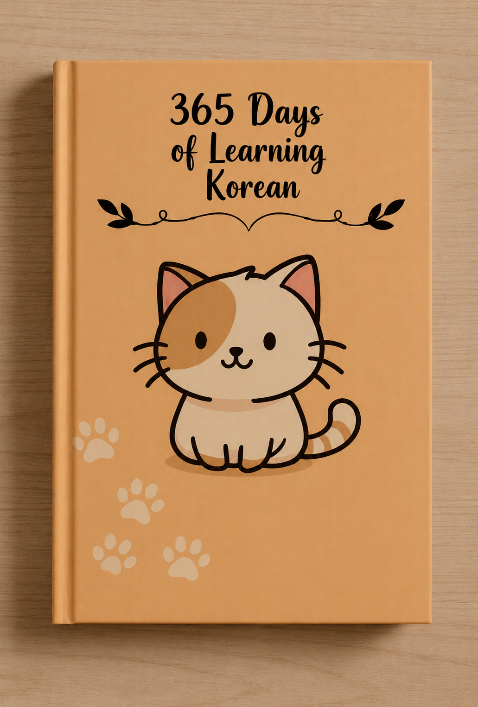

365 Days of Learning Korean: A Beginner's Guide to Learning Korean One Day at a Time

Most people who want to learn Korean for beginners start the same way: they download three apps, watch a few YouTube videos, and burn out within two weeks. The problem isn't motivation — it's the lack of a simple, sustainable structure. That's exactly what a 365 days learn Korean approach fixes: instead of cramming, you build the language one small, manageable day at a time.
This guide walks through how a daily Korean language learning book actually works, what a realistic study roadmap looks like, and the habits that separate people who quit in month one from people who can hold a real conversation by the end of the year.
Why Learn Korean the "365 Days" Way
Language learning research consistently shows that short, daily study sessions beat long, infrequent ones. A 365-day structure isn't just a gimmick — it matches how memory actually works.
The Problem With Cramming Korean
Sitting down for a three-hour Korean study marathon feels productive, but most of that vocabulary is forgotten within 48 hours without review. Cramming also makes the language feel overwhelming, which is one of the biggest reasons beginners give up on learning Korean within the first month.
Why Daily Practice Beats Long Study Sessions
Ten focused minutes a day, repeated for a year, builds far stronger recall than a handful of long sessions. Each day's small win — one page, five new words, one grammar point — compounds, and by day 100 you're working with a genuinely usable vocabulary without ever feeling burned out.
What's Inside a 365-Day Korean Learning Book
A well-structured daily Korean book usually breaks the year into three connected layers: reading and pronunciation, vocabulary, and grammar — each building on the day before.
Daily Vocabulary Practice
Each day introduces a small, focused set of words — often themed around real situations like ordering food, greetings, or daily routines — rather than a random word list. Context-based vocabulary sticks far better than isolated word-and-definition pairs.
Hangul and Pronunciation Basics
Early days are dedicated to learning Hangul, Korea's writing system, since it's the foundation everything else is built on. Hangul is phonetic and was specifically designed to be learned quickly, which makes it one of the most beginner-friendly alphabets in the world.
Simple Grammar, One Piece at a Time
Instead of a dense grammar chapter dropped all at once, grammar points are introduced gradually and reinforced through the vocabulary you're already learning, so sentence structure feels like a natural extension of what you already know rather than a separate subject.
How to Learn Korean for Beginners: A Realistic Roadmap
Here's roughly what a well-paced first few months of learning Korean looks like when you follow a daily structure instead of trying to rush.
Week 1-2: Master Hangul First
Focus entirely on reading and writing Hangul before worrying about vocabulary size. Once you can sound out Korean words on sight, everything that follows becomes noticeably easier.
Month 1: Build Core Vocabulary
With Hangul in place, shift toward daily vocabulary — greetings, numbers, common verbs, and everyday nouns. By the end of month one, most learners have a working vocabulary of 150-250 words.
Months 2-3: Simple Sentences and Grammar
This is where isolated words start turning into real sentences. Basic sentence structure, particles, and simple verb conjugations come into focus, and short, everyday conversations start to feel achievable rather than abstract.
Daily Habits That Make Korean Stick
The book or app you use matters less than the habits you build around it. A few consistent habits make the biggest difference over a full year.
Consistency Over Intensity
Ten minutes every day beats two hours once a week, every time. Protecting a small, non-negotiable daily slot — even five minutes on busy days — keeps momentum from breaking.
Track Your Progress
Marking off each completed day, even in a simple habit tracker, turns an abstract goal ("learn Korean") into something visible and motivating. Watching a streak grow is often what keeps learners going past the point where motivation alone would have run out.
Immerse Yourself Beyond the Book
Once you have a basic vocabulary, listening to Korean through music, shows, or podcasts reinforces what you're studying and trains your ear for natural pronunciation and rhythm, well beyond what a textbook alone can teach.
Who a Korean Learning Book Like This Is For
Complete Beginners
If you've never studied Korean before, a structured daily book removes the guesswork of figuring out what to study and in what order — everything is already sequenced for you.
K-Drama and K-Pop Fans Learning for Fun
Many learners start because they want to understand their favorite shows or songs without subtitles. A daily structure keeps that motivation productive instead of scattered across random vocabulary lists.
Self-Learners Without a Tutor
Not everyone has access to a Korean tutor or class. A well-designed 365-day book is built specifically so it can be studied entirely on your own, at your own pace, with no outside instruction required.
Common Mistakes Beginners Make When Learning Korean
Skipping Hangul and Relying on Romanization
Romanized Korean (writing Korean sounds using English letters) feels faster at first, but it teaches inaccurate pronunciation habits that are hard to unlearn later. Learning Hangul properly from day one avoids this trap entirely.
Learning Vocabulary Without Context
Memorizing isolated word lists is one of the least effective ways to build lasting vocabulary. Words learned inside a sentence or real situation are recalled far more easily than words learned in a flashcard vacuum.
Avoiding just these two mistakes puts most beginners well ahead of where they'd be with a random, unstructured approach to learning Korean.
Our Take: 365 Days of Learning Korean
If you've tried learning Korean before and lost momentum, the issue was likely the structure, not your ability. Our 365 Days of Learning Korean book is built page by page around exactly this daily approach — Hangul, vocabulary, and simple grammar, paced so it never feels overwhelming.
Learning a language is a marathon, not a sprint, and a book built for daily, sustainable progress is often the difference between finishing the year fluent and giving up in week three.
How to Stay Motivated for a Full Year of Korean Study
Even the best daily Korean learning book can't do the work for you on the days motivation runs low. A few small strategies make a real difference over 365 days.
Pair Study With Something You Already Enjoy
Studying right before watching a K-drama episode, or reviewing vocabulary while listening to Korean music, links your daily practice to something you're already looking forward to, instead of treating it as a separate chore.
Don't Aim for Perfect, Aim for Consistent
Missing one day doesn't undo weeks of progress, but treating one missed day as a reason to quit does. The learners who make it through a full year of Korean study are rarely the ones who never miss a day — they're the ones who simply pick the book back up the next day.
Celebrate Small Milestones
Reading your first full Hangul sentence, understanding a line in a song without subtitles, or ordering food using a phrase you learned that week are all worth noticing. These small wins are what carry motivation across an entire year, far more reliably than the distant goal of "fluency" ever does.
Frequently Asked Questions
How long does it take to learn Korean as a beginner?
With consistent daily practice, most beginners can learn Hangul within a couple of weeks and start forming simple sentences within 2-3 months. Real conversational comfort usually takes 6-12 months of regular study, which is exactly why a 365-day, one-day-at-a-time approach works so well.
Do I need to learn Hangul before anything else?
Yes. Hangul is Korea's alphabet and can be learned in a few days since it's phonetic and logically designed. Skipping it and relying on romanized Korean makes pronunciation and reading much harder later on, so it's worth learning first.
Can I learn Korean without a tutor?
Yes, many learners successfully self-study Korean using a structured book, daily vocabulary practice, and consistent exposure through shows, music, or apps. A tutor can speed up speaking practice, but isn't required to build a strong foundation.
How many new Korean words should I learn per day?
5 to 10 new words a day is a sustainable pace for most beginners. That adds up to roughly 2,000-3,500 words over a year, which is enough for everyday conversations and understanding most casual Korean media.
Is learning Korean through K-dramas and K-pop effective?
It's a great supplement, not a replacement. K-dramas and K-pop help with listening comprehension, pronunciation, and motivation, but pairing them with structured vocabulary and grammar study gets you fluent far faster than immersion content alone.
Explore 365 Days of Learning Korean →